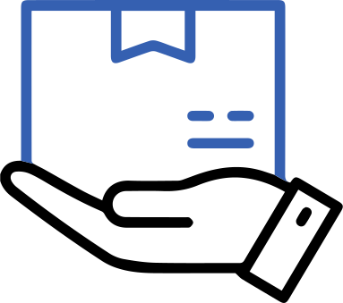
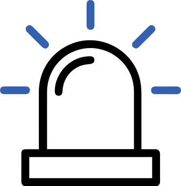

Problem
Home safety and security are important aspects of everyone's daily lives. While there are many home security products that can offer you that kind of protection, they are not convenient to bring wherever you go. These security devices require configuration in the location its at, which can be difficult and time consuming for many frequent movers.
Challenge: How might we help ease the complexity of home security setup while retaining the level of security for people who often relocate?
Process
Our team created a timeline to ensure that we can deliver our minimum viable product (MVP) on time. My role was to conduct user research, brainstorm, develop a solution and lead user testing of our prototype. After handing off the design of Sentry's interface and home security device, I focused on designing the presentation deck for our pitch night.
- Survey
- User Interview
- Competitive Analysis
- Actionable Insights
- Safety Features
- Visual Design
- Mid-Fi Wireframes
- Device Design
- User Testing
- Iteration
- Hi-Fi Prototype
- Presentation
Research
Synthesize
Design
Prototype & Test
Deliver
Designed and developed Sentry within eight weeks.
Research
I started with an evaluative research by sending out surveys to people who often relocate to narrow down our user focus. I identified an opportunity among college students and talked to them to learn about their experience with home security and current solutions on the market.
Survey
Distributed online to people who often relocate and received 38 responses
User Interviews
Conducted 30 minutes sessions with 8 college students

Competitive Analysis
Conducted an analysis on current home security products on the market
Synthesize
Once I concluded my research, I analyzed my findings to identify college students' pain points of using current home security products in relation to relocation and common concerns for home safety. Here were the insights and safety features:
Insights
-

Extreme Portability
College students dislike setting up home securities and want to be able to quickly and easily set them up in their new home
Clear Indicators
College students often don't understand the indicators signalled by their home securities, which causes them to panic
Centralized Security
Due to many safety concerns, college students have trouble keeping track of all the home securities at the same time
Safety Features
Many college students were concerned about smoke, carbon monoxide and home break-ins, so these were the safety features that I focused on.
Safety concerns that many college students have in common.
Design
With these insights and safety features in mind, my team and I brainstormed for potential solutions and decided to go with a portable and all-in-one home security device called Sentry. As a startup project, there were three components needed to showcase our MVP at Pitch Night:
- Design assets and style tiles for Sentry's brand identity
- Create a rendered model the home security device
- Create a prototype of the app that shows how it would interact with the device
Visual Design
I wanted to create a brand identity that conveys a sense of security and introduces Sentry as a product with both digital and physical components.
Sentry's assets and style tile.
Interface Design
Since the app is designed to interact with the device, I designed the interface like a remote control that displays warnings on smoke, CO and theft entry.
The device has two modes: Home and Away. The device is defaulted on Home mode and will only check for smoke or CO. Students can switch to Away mode by tapping on the home button, which will turn on its motion sensor and camera for theft entry. If the motion sensor gets triggered, the device will instantly take a photo and and send it to the app. Students can view the photos by tapping on the camera icon.
When the device detects smoke or CO, it will display the triggered sensor on the interface and warn its user. Users can dismiss the warnings and the device will go back to standby. If there are no response from the user after a period of time, the app will automatically call first responders.
Once I settled on the wireframes, I incorporated the visual design. The warnings are colored coded to make them more obvious to show what the device had detected.
Usability Testing
I rounded up 3 college students to go through our user testing, and I discovered that they found some features perplexing, which prolonged any interaction with the device. Therefore, I revised and added features to make the user experience more effective:
- Created dynamic features to amplify warnings and make the screen less crowded with graphics
- Implemented faster ways to access photos taken by the device
- Displayed more detailed yet concise information for clarity
Device Design
Since my team and I wanted Sentry to be portable, easy to setup and can detect multiple anomalies, we decided to create an all-in-one device. In addition to the home security features, we implemented other features to make the experience more secured:
- Designed the device's form to be able to place on any flat surface, so no complicated setup is required
- Implemented voice command to allow students to interact with the device when their hands are busy
- Incorporated speakers and LED light to notfiy warnings and feedback on student's actions

Prototype
In order to better understand how our app and device works, I created a couple illustrations of scenarios that show how will the device react and what actions users can do.
Detecting smoke or CO, but no user response.

Motion sensor gets triggered, and checking photo.
Conclusion
From this project, I learnt that there is a lot of work that had to be done on a startup project. From creating graphics for our products to organizing the presentation deck for Pitch Night, I was able to develop my experience and skills as a designer. If I had more time, I would like to take the opportunity to test the security device and refine the app further. While my team and I did not move forward with Sentry, it was an insightful experience and I enjoyed working on this project.

Spring 2020 LavaLab cohort teams on Pitch Night.